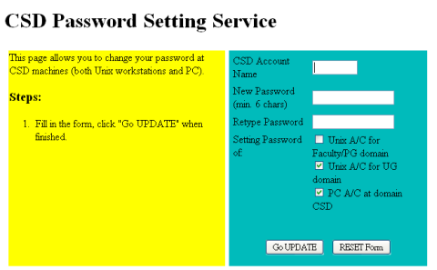

This is your first lab of COMP2011. In this lab we are going to get familar with your C++ development environment VS Code and basic C++ syntax.
You may register your CS account using the CSD Password Setting Service. You can use that to login to the CS lab computers (when they are open) later on.
Enter your CSD username which should be the same as your ITSC username. Pick a password, then tick the 2nd and 3rd option in the account activation page: Unix A/C for UG domain, PC A/C at domain CSD, as follows.

Follow our VS Code tutorial page to set up your VS Code and run your first C++ program. To save your time, feel free to copy the following code as your first program:
In this lab you are given a piece of code that contains some errors. Your task is to correct all these errors, then compile and run your corrected program. Show it to the TA in your lab session, and tell them what changes you have made to the code.
The following are some sample output. Note that the user input is in green color.
If you run the program and enter an even integer, you should have the following output:
Welcome to the exciting, fun, and awesome programming world! Enter an odd number, and I can tell something about you!
4
Hmm... this is not an odd number...
Welcome to the exciting, fun, and awesome programming world! Enter an odd number, and I can tell something about you!
-2
Hmm... this is not an odd number...
If you run the program and enter a positive odd integer, you should have the following output:
Welcome to the exciting, fun, and awesome programming world! Enter an odd number, and I can tell something about you!
9
You must be very excited! Me too! :)
If you run the program and enter a negative odd integer, you should have the following output:
Welcome to the exciting, fun, and awesome programming world! Enter an odd number, and I can tell something about you!
-11
You seem to be a bit negative... :( Cheer up!
Note: You don't have to handle non-integers.
If you encounter any technical problems when compiling and running your first program. you may check the FAQ section of the tutorial page, ask your lab TA, or post your issues on our online discussion forum (click "Piazza" on the menu of the COMP2011 Canvas Page) with the vscode tag if it is about the VS Code. Before you post, however, please check if your question is already asked on the forum.
Each lab carries 3 points in total.